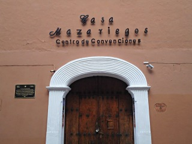
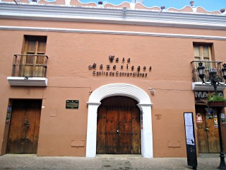
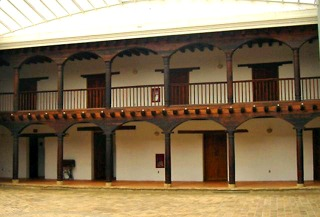
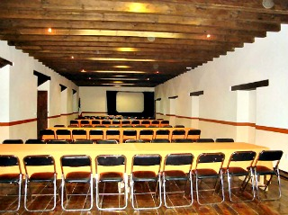
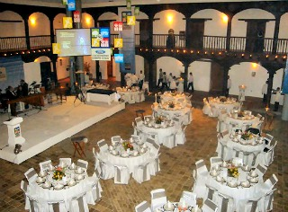

Fue originalmente la Casa del Capitán Diego de Mazariegos, fundador de San Cristóbal de las Casas en 1528. Su construcción data del siglo XVI. Su estructura original en el interior ha sido modificada conservando únicamente su prístino interior. Fue casino, colegio, accesorias comerciales.
A partir de su restauración en el año 1999, es un centro de convenciones el cual ha sido ocupado para eventos sociales, empresariales, académicos, científicos y culturales de gran relevancia.
Se encuentra ubicado sobre la avenida miguel hidalgo S/N
Si usted se encuentrado en la plaza de la paz viendo de frente hacia la catedral puede caminar hacia su derecha pasando por la plaza 31 de Marzo como referencia encontrará la farmacia similar continue caminando sobre el andador y justo a lado del rincon vino se encuentra el centro de convenciones casa mazariegos.
En el lugar usted puede realizar actividades como:
* Fotografía
* Visita a centros de convenciones
* Asistencia a congresos y seminarios
* Asistencia a eventos científicos
* Asistencia a eventos culturales
* Asistencia a eventos gastronómicos
* Asistencia a ferias artesanales
* Asistencia a ferias industriales
* Asistencia a festivales de cine
* Asistencia a festivales de música
* Asistencia a festivales de rock
* Asistencia a festivales folklóricos
* Asistencia a festivales de ópera y ballet





posicione el mouse sobre las imágenes